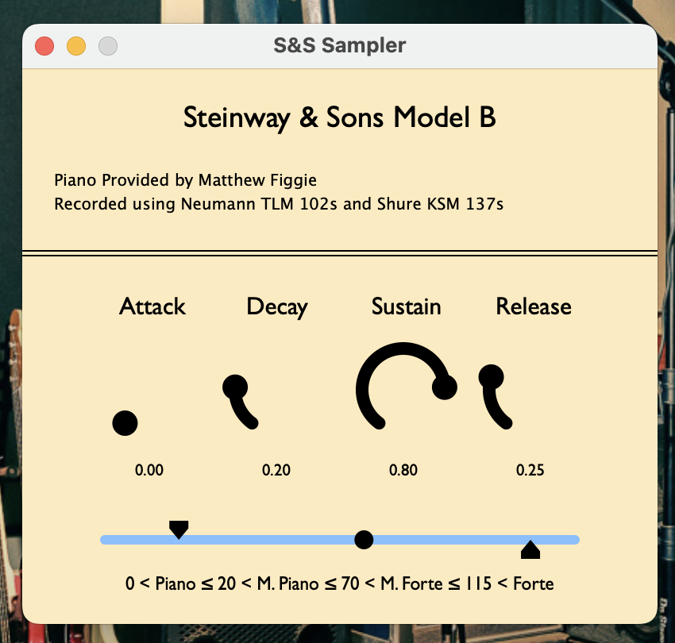

for gearheads: KSM 137 overheads, TLM102s close-miked, thru Pheonix 500-series preamps inside an API lunchbox. Audio is converted with a MOTU a/d.
Some years ago I recorded a sample library of the piano pictured below, comprised of each note played at 4 volumes, in 4 audio channels. Recently, I put together VST and AU plugins using the JUCE C++ framework, which maps each MIDI channel (corresponding to the acoustic piano layout) to a group of samples, which are chosen based on the strength at which the note was triggered. You can take it for a spin yourself, or check out some "recordings" of jazz classics below, made with MIDI from Doug McKenzie.